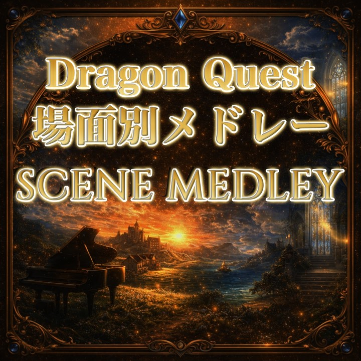
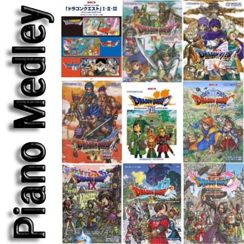

ドラクエ 場面別 ピアノメドレー
更新: 5 日前 / すべてのポッドキャストを表示
Open playlistDragon Quest Piano Library
Browse Medleys across the Dragon Quest piano library.

更新: 5 日前 / すべてのポッドキャストを表示
Open playlist
すべてのポッドキャストを表示
Open playlistCategory
Featured with locally saved podcast cover images.
更新: 5 日前 / すべてのポッドキャストを表示
Open playlistすべてのポッドキャストを表示
Open playlistRelated
Jump into related series pages.